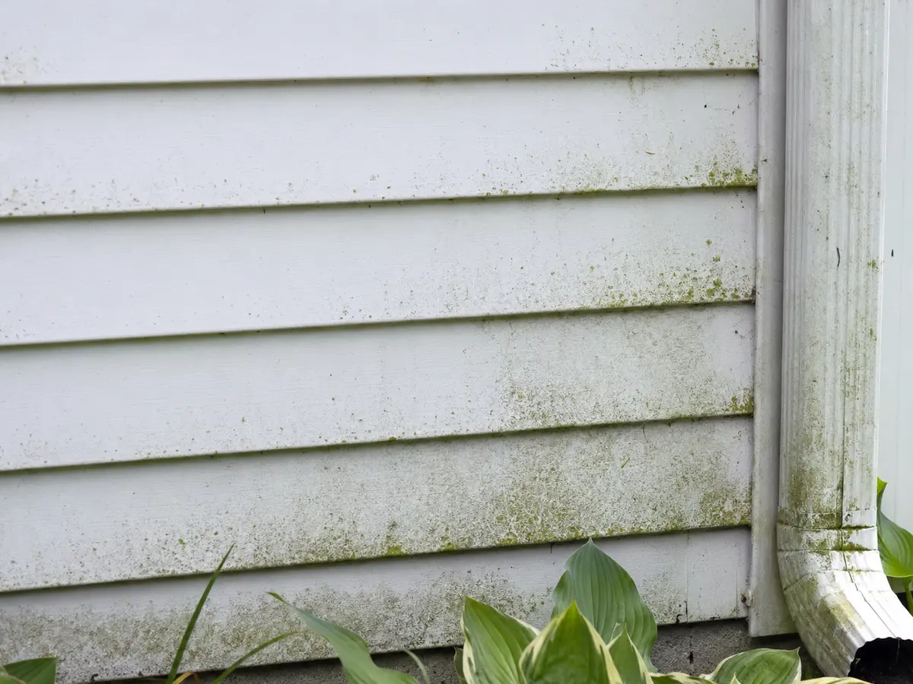
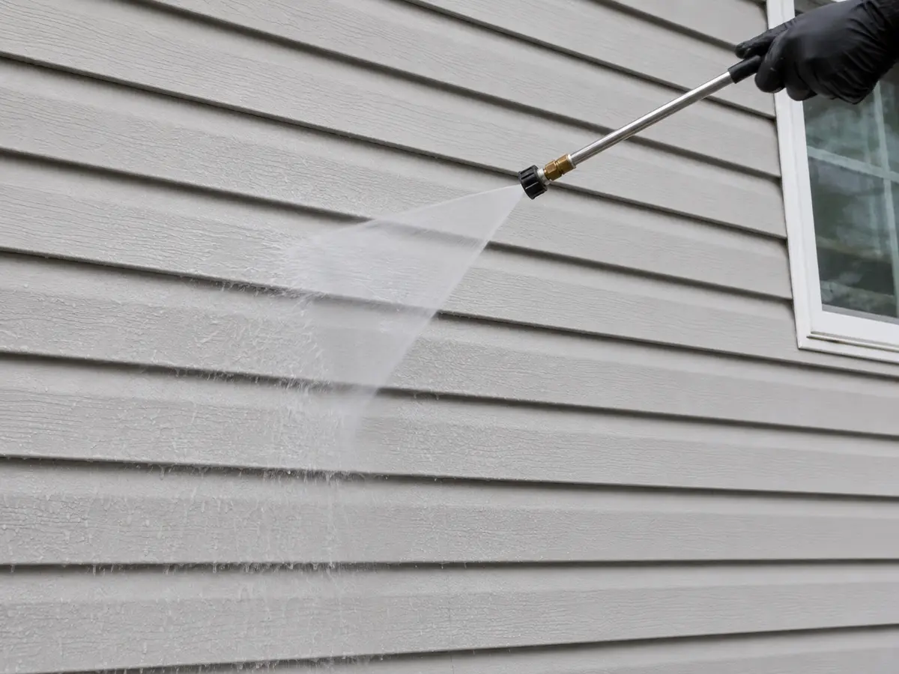

Vinyl siding is durable and relatively easy to maintain, but improper cleaning can force water behind the panels, damage the finish, leave permanent streaks, or create problems around windows, doors, vents, and electrical fixtures.
Mid-Missouri homes regularly collect pollen, dust, cobwebs, bird droppings, and organic growth. Shaded walls, areas beneath trees, and siding near leaking gutters or downspouts often develop buildup faster than sunny, well-ventilated sections of the house.
Safe siding cleaning begins with identifying the material, inspecting its condition, and choosing the gentlest process capable of removing the contamination.
Confirm That the Siding Is Vinyl
Several exterior materials can look similar from the ground. Vinyl, aluminum, painted wood, engineered wood, and fiber-cement siding have different cleaning restrictions.
Look for horizontal panel overlaps, seams, corner posts, and the slight movement commonly found in properly installed vinyl panels. If the material remains uncertain, check property records, ask the manufacturer or installer, or have an exterior-cleaning professional identify it.
Manufacturer instructions should always take priority. Some manufacturers permit careful pressure washing, while others restrict the pressure, cleaning products, or equipment that may be used.
Inspect the House Before Cleaning
Walk around the property and inspect the siding from several angles. Look closely for:
- Cracked, loose, warped, or unlocked panels
- Open joints and damaged corner pieces
- Loose trim or failed caulking
- Damaged window and door seals
- Uncovered electrical outlets or fixtures
- Open vents and exterior air intakes
- Peeling paint on nearby trim
- Oxidized or chalky surfaces
- Existing water stains around windows
- Active leaks near gutters and downspouts
These conditions should be documented before washing. Water can enter through an opening that appears minor from the ground, and cleaning can reveal fading or oxidation that was hidden beneath dirt.
Painted surfaces on homes built before 1978 require additional attention because disturbing lead-based paint can create contaminated chips and wastewater. EPA rules require paid contractors performing covered work to use appropriate lead-safe practices and containment.

Begin With the Mildest Appropriate Method
The Polymeric Exterior Products Association recommends mild soap, water, and a soft cloth or soft-bristled brush for routine vinyl-siding cleaning. A garden hose may be sufficient for light dust and pollen.
Heavier organic growth may require a surface-compatible exterior cleaner. Read the siding manufacturer’s instructions and the cleaner’s entire label before applying anything to the house.
Test the process in a small, inconspicuous area. Allow the test area to dry completely before continuing because color changes and streaking may become easier to see after drying.
Can Vinyl Siding Be Pressure Washed?
Some vinyl siding can be pressure washed carefully when the manufacturer permits it. The equipment should be operated from a safe distance with a wide, controlled spray pattern.
Keep the spray level or angled downward. Directing water upward into the horizontal laps can force it behind the panels. Use extra caution around windows, doors, plumbing penetrations, vents, corners, soffits, electrical fixtures, and damaged sections.
Begin farther away from the wall and approach gradually. Pressure varies substantially between machines, nozzles, and distances, so a universal PSI setting cannot guarantee safe results.
Narrow nozzles, concentrated streams, and rotating turbo nozzles can increase the chance of cutting, marking, or dislodging siding. High pressure should never be used as a substitute for the correct cleaning solution and dwell time.
What Is Soft Washing?
Professional house washing commonly uses low-pressure application and rinsing with a cleaning solution selected for the surface and contamination.
This process reduces the amount of mechanical force placed on siding, seals, trim, and other exterior components. The cleaning solution loosens organic buildup so it can be rinsed away with controlled pressure.
Chemical strength still matters. An overly strong solution, excessive dwell time, or poor rinsing can damage landscaping, finishes, metals, and surrounding materials. Professional cleaning should include chemical control, plant protection, runoff planning, and a thorough final rinse.
A Safer Vinyl-Siding Cleaning Process
1. Choose Suitable Conditions
Work during mild weather when the siding is cool. Direct sunlight and high temperatures can cause cleaning solution to dry prematurely. Avoid washing during strong wind because overspray becomes harder to control around people, vehicles, landscaping, neighboring property, and open windows.
2. Prepare the Property
Close windows and doors. Move furniture, grills, toys, decorations, vehicles, and other objects away from the work area. Protect electrical fixtures, outlets, doorbells, cameras, and delicate landscaping as directed by the equipment and cleaning-product manufacturers. Keep children and pets away until cleaning is finished and the area has been rinsed.
3. Use Compatible Cleaning Products
Use a cleaner labeled for the siding and contamination being treated. Follow the label’s dilution, application, dwell-time, protective-equipment, and rinsing instructions.
Never apply undiluted chlorine bleach to vinyl siding. Never mix chlorine bleach with ammonia-containing cleaners because the combination can release toxic fumes.
Many consumer pressure washers also prohibit bleach or corrosive chemicals inside their pumps or onboard detergent tanks. Consult the equipment manual before introducing any chemical.
4. Work in Manageable Sections
Apply the cleaner in small sections so it remains controllable. Cleaning from the bottom upward can help prevent streaking. Keep the section wet during the required dwell time and never allow the solution to dry on the siding.
Avoid aggressive scrubbing. When brushing is necessary, use a soft-bristled brush and test it first in a hidden area.
5. Rinse From the Top Down
Rinse each completed section thoroughly from the top downward. Maintain a controlled angle that keeps water out of siding laps, vents, windows, doors, and electrical openings.
Continue rinsing until cleaning residue and loosened contamination are gone. Landscaping and adjacent surfaces should also receive the rinsing required by the cleaner’s label.

6. Inspect After Drying
Walk around the house after the siding has dried. Check for remaining streaks, missed sections, loose panels, damaged seals, and signs that water entered around windows or doors.
Persistent stains may require a stain-specific treatment. Repeated washing with greater pressure can damage the surface without removing contamination that needs a different chemical process.
Pressure-Washer Safety Matters
A pressure washer can cause a serious injection injury even when the wound initially appears minor. The spray can also throw debris, create electrical hazards, and cause the operator to lose balance.
- Never point the spray gun toward yourself or another person.
- Wear eye protection, appropriate footwear, and other equipment required by the manufacturer.
- Keep children and bystanders away from the work area.
- Test ground-fault protection before operating an electric pressure washer.
- Keep electrical connections away from standing water and runoff.
- Never operate a gasoline-powered washer inside a building or near windows, doors, vents, or air intakes.
- Avoid using a pressure washer from a ladder.
- Release stored pressure before changing nozzles or disconnecting equipment.
Seek prompt medical attention for any high-pressure spray injury. Internal tissue damage can be more serious than the visible wound suggests.
What Is the Green or Black Material on Siding?
Green buildup is frequently associated with algae or other organic growth, especially in damp and shaded areas. Dark discoloration may involve organic growth, dirt, pollution, insect residue, oxidation, or another stain source.
Color alone cannot reliably identify the contamination. Choosing a treatment based only on appearance can waste time or damage the siding.
Recurring buildup may indicate persistent shade, dense vegetation, poor airflow, leaking gutters, downspout discharge, sprinklers striking the wall, condensation, or another moisture source. Correcting the moisture source can help slow the buildup after cleaning.
When Should You Call a Professional?
Professional house washing is appropriate when:
- The home has two or more stories
- Sections cannot be reached safely from the ground
- The siding material or manufacturer is unknown
- Panels are loose, cracked, oxidized, or heavily faded
- Growth covers a large portion of the house
- The property has extensive landscaping or runoff concerns
- Electrical fixtures or service connections complicate the work
- Painted surfaces may contain lead
- Previous cleaning left streaks or visible damage
- The homeowner lacks appropriate equipment or protective gear
A professional should inspect the property, select the cleaning method, protect surrounding materials, control the cleaning solution, and rinse the siding without forcing water into the wall assembly.
Sources and Further Reading
- Polymeric Exterior Products Association: Cleaning and Maintenance
- Centers for Disease Control and Prevention: Pressure Washer Safety
- U.S. Environmental Protection Agency: Chlorine Bleach and Mold Cleanup
- U.S. Environmental Protection Agency: Pressure Washing and Lead-Safe Containment
Professional House Washing in Mexico, Missouri
G&S Exterior Restoration evaluates every property according to its exterior material, condition, contamination, access, landscaping, and drainage.
Call or text 314-467-0332 to request a free estimate, or visit gsrestoration.net.